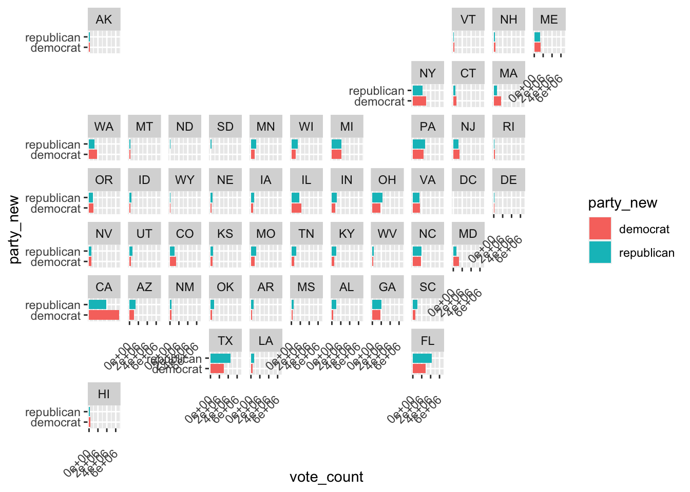

library(tidyverse) # ggplot, lubridate, dplyr, stringr, readr...
library(tidytext)
library(praise)
library(paletteer)
library(geofacet)
library(usmap)
library(gganimate)
library(transformr)US House Results
The Data
The data this week comes from the MIT Election Data and Science Lab (MEDSL).
house <- read_csv("house.csv") |>
mutate(party_new = case_when(
party == "DEMOCRAT" ~ "democrat",
party == "REPUBLICAN" ~ "republican",
party == "LIBERTARIAN" ~ "libertarian",
party == "INDEPENDENT" ~ "independent",
party == "CONSERVATIVE" ~ "conservative",
party == "GREEN" ~ "green",
TRUE ~ "other"
))house |>
group_by(party) |>
summarize(count_party = n()) |>
arrange(desc(count_party))# A tibble: 478 × 2
party count_party
<chr> <int>
1 DEMOCRAT 9908
2 REPUBLICAN 9705
3 <NA> 3858
4 LIBERTARIAN 2769
5 INDEPENDENT 1217
6 CONSERVATIVE 668
7 GREEN 513
8 NATURAL LAW 371
9 WORKING FAMILIES 283
10 LIBERAL 266
# ℹ 468 more rowshouse |>
group_by(party_new) |>
summarize(count_party = n()) |>
arrange(desc(count_party))# A tibble: 7 × 2
party_new count_party
<chr> <int>
1 democrat 9908
2 republican 9705
3 other 7672
4 libertarian 2769
5 independent 1217
6 conservative 668
7 green 513Some maps
house |>
filter(year == 2022) |>
filter(party_new %in% c("democrat", "republican")) |>
group_by(state_po, party_new) |>
summarize(vote_count = sum(candidatevotes)) |>
ggplot(aes(y = vote_count, x = party_new, fill = party_new)) +
geom_bar(stat = "identity") +
coord_flip() +
theme(axis.text.x = element_text(angle = 45, vjust = 0.5, hjust=1)) +
facet_geo(~state_po, grid = "us_state_grid2")

Alas, OF COURSE, districts are different from counties. There are way more counties than districts. So the vast majority of counties are not colored in.
house_county <- house |>
mutate(fips = case_when(
state_fips < 10 ~ paste0("0",state_fips,district, sep = ""),
TRUE ~ paste(state_fips,district,sep="")
)) |>
filter(party_new %in% c("democrat", "republican")) |>
group_by(state, district, year) |>
mutate(proportions = candidatevotes / sum(candidatevotes)) |>
select(state_fips, district, fips, proportions) |>
filter(year == 2016)
usmap::plot_usmap(regions = "counties",
data = house_county,
values = "proportions",
linewidth = 0) +
scale_fill_continuous(type = "viridis",
name = "Purpleness")So instead, let’s look at the state map. Here the total number of votes cast is summed up over all of the districts in a particular state.
house_state <- house |>
filter(party_new %in% c("democrat", "republican")) |>
group_by(state, year, party_new) |>
summarize(party_count = sum(candidatevotes)) |>
summarize(proportions = party_count / sum(party_count), party_new = party_new) |>
mutate(year = as.integer(year))
p <- usmap::plot_usmap(regions = "state",
data = house_state,
values = "proportions",
linewidth = 0) +
scale_fill_gradient(low = "red", high = "darkblue",
name = "Purpleness") +
transition_time(year) +
labs(subtitle = "Year: {frame_time}",
title = "Out of total votes cast for Republicans and Democrats, the proportion\n that went to democrats.",
caption = "Data credit: @MIT Election Data and Science Lab")
animate(p)praise()[1] "You are best!"